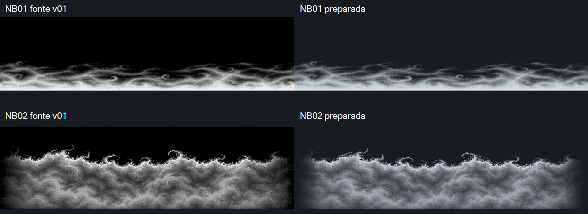
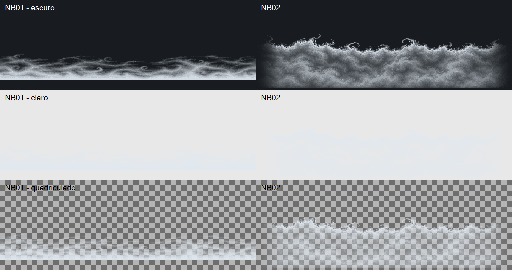
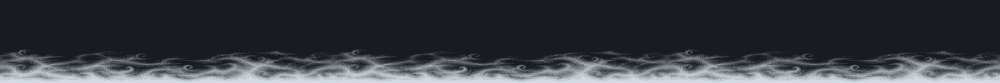
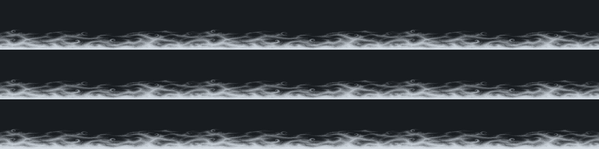
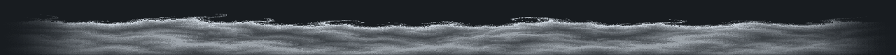
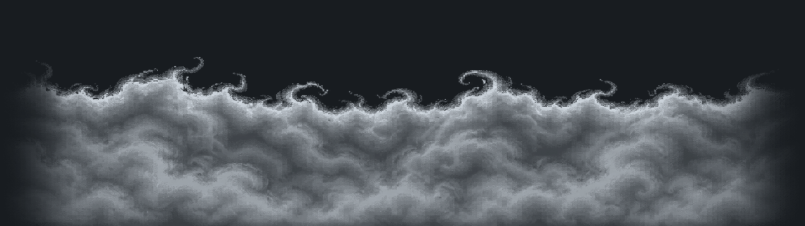

Duas derivadas técnicas das fontes v01 aceitas. Conferência técnica PASS; as duas derivadas v01 foram aceitas visualmente pelo dono em 15/10/2026. Implementação a cargo de Claude. Nenhum asset foi admitido no jogo. As fontes permanecem intactas.
Esquerda: fonte com preto original. Direita: derivada com alfa sobre fundo escuro. Escalas ajustadas para comparação; originais preservados. NB01 teve costura apenas horizontal. NB02 teve o conteúdo vertical mapeado para baixo dos primeiros 90 px, com pontas atenuadas.

RGB constante (224, 232, 240), alfa por luminância Rec.709, ruído até 2/255 removido. A névoa fica pouco contrastada no fundo claro; a avaliação de legibilidade em combate exige integração e playtest posteriores.

Colunas externas de alfa idênticas. Inspeção em três cópias; nenhum requisito de emenda vertical.

As transições verticais são esperadas: a textura tem base densa e topo vazio.



Checkpoint visual das duas derivadas DRAFT v01 concluído. Entrega local disponível em ENTREGA-PARA-IMPLEMENTACAO.md. Avalie a silhueta, a costura horizontal de NB01, a crista de NB02 e a aparência após conversão para alfa. Esta galeria não é um playtest nem comprova perigo ou avanço em jogo.